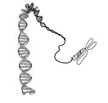
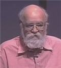

Virus de la mente [Conferencia: Daniel Dennet]

En 1976, Richard Dawkins publicó su libro El gen egoísta, en el cual propuso al gen como la unidad central del proceso evolutivo. Al final de este libro, Dawkins propuso otra entidad replicante similar a los genes, que podía obedecer también al proceso de evolución Darwiniana: Los memes.
Un meme es una unidad teórica de información capaz de ser transmitida de una mente a otra, lo que incluye costumbres, creencias, hábitos, lenguaje, habilidades, historias, etcétera.
En el planteamiento original de Dawkins, la idea de las ideas replicantes (memes) surge como un posible ejemplo de que, en cualquier lugar donde existan entidades replicantes, se seguirá el proceso de selección darwiniana para crear sistemas de gran complejidad.
Los memes han resultado ser una idea exitosa, y desde hace algunos años ya se habla de la memética, o el campo de estudio de los procesos evolutivos de los memes.
Una de las implicaciones de ver a las ideas como unidades independientes que buscan ser replicadas, es que el individuo es ‘utilizado’ por los memes que alberga para propagarse, incluso aunque esto vaya en contra de la supervivencia de dicho individuo.
Estas ideas o memes que son nocivas para el individuo que las alberga, son llamadas ‘virus de la mente’. Esta frase en particular ha sido utilizada por Richard Dawkins para describir a las creencias y actividades religiosas (Dawkins es uno de los mayores críticos contemporáneos de la religión, obviamente es ateo).
Sin embargo, la teoría de los memes no es aceptada universalmente. Tiene numerosos detractores tanto en el ámbito filosófico como en el científico. Las principales críticas hacia las ideas como entidades auto replicantes son:
- Las ideas forman complejas interrelaciones entre ellas, por lo que no puede hablarse de unidades atómicas que se repliquen de manera independiente. Es decir, los memes no existen.
- Una idea al propagarse de una mente a la otra no es copiada, es transmitida y puede cambiar radicalmente al hacerlo. De tal manera que no se puede decir que una idea se reproduzca en un sentido darwinista.
- No existe un mecanismo hereditario claro en los memes. Esto junto con la falta de claridad al definir lo que es la unidad mínima auto replicante, se considera fatal para poder aplicar la evolución darwiniana a las ideas.
-Los memes como base para comprender el mecanismo de la mente humana son otro caso de extremo reduccionismo. Es decir, que se pretende explicar algo mediante su descomposición en sus partes más simples, cuando esto no es posible.
Sin embargo, y a pesar de las críticas, la idea de los memes es útil para comprender la evolución cultural. Es decir, si se estudia la cultura como si los memes actuaran para maximizar su replicación y supervivencia, tal perspectiva puede abrir paso a valiosos descubrimientos y predicciones sobre cómo la cultura evoluciona en el tiempo.
La polémica alrededor de la validez de los memes seguramente continuará. Y así como hay objeciones existen respuestas por parte de los defensores de la teoría de los memes, entre los cuales se destaca el filósofo Daniel Dennet.
El ponente
Daniel Dennet es un destacado filósofo estadounidense, que centra sus estudios en la filosofía de la mente, la filosofía de la ciencia y la filosofía de la biología, con aportaciones importantes en la teoría de la inteligencia artificial, teoría de la consciencia y memética. Ha publicado varios libros, y en el caso de este anotación destaca su libro Romper el hechizo (en inglés Breaking the Spell: Religion as a Natural Phenomenon).
Deliberadamente no utiliza los términos formales de la filosofía en sus trabajos (por considerar inútiles a dichos términos), lo que vuelve difícil ubicar sus opiniones en el ámbito filosófico.
En la siguiente presentación, que resulta demasiado breve, Daniel Dennet hace un breve bosquejo de los memes y su peligro potencial, al ser ‘parásitos que controlan la mente’. Que lo disfruten.
Memes Peligrosos
Parásitos mentales.
[Charla completa en YouTube por cortesía de Keny.]
*Descarga la conferencia (720×400): Descargar archivo
Video: Xvid, audio: mp3, tipo: AVI, tamaño: 79.3MB.
>> Compatible con reproductores certificados DivX.
Traducción y subtítulos: Ajmme Kajros
En TED: Dan Dennett on dangerous memes
*Video subtitulado y distribuido bajo los términos de uso de TED Conferences LLC.
Metadatos y acciones
 Temas: cultura, filosofia, genetica, tedtalk, video ⋅
Para guardar: Enlace permanente a esta anotación.
Temas: cultura, filosofia, genetica, tedtalk, video ⋅
Para guardar: Enlace permanente a esta anotación.
 Print This Post
Print This Post
Comentarios
Los comentarios están cerrados.
Categorías
Últimas 4 anotaciones
Últimas anotaciones en cada categoría

Divulgación
El dinero no fomenta la creatividad: Daniel Pink en TEDGlobal 2009

Inspiración
Los 30 no son los nuevos 20

Noticias
Ver tu mente en tiempo real: Christopher deCharms en TED 2008
![Música en la era digital [Animación]](../../../wp-content/themes/tma/images/featured/animation_04_2009_featured.jpg)
Ocio
Música en la era digital [Animación]
agosto 16, 2008, 1:39 pm
Información Bitacoras.com…
Si lo deseas, puedes hacer click para valorar este post en Bitacoras.com. Gracias….
agosto 20, 2008, 1:09 pm
Muy bien te felicito por tu sitio te esta quedando muy bien!!!
Sigue asi, ah y gracias por todo tu apoyo en los momentos dificiles!!!
Abrazos
agosto 25, 2008, 6:48 am
@Karla: Gracias a ti por tu comentario. Cuídate mucho.
Cuídate mucho.
septiembre 8, 2008, 8:02 pm
Hoy vimos el video y me parecio interesante,buen trabajo traductor. besos
enero 2, 2009, 12:58 pm
Hola :
Iam cuban living in Alicante Spain by the time being.
Iam doing reserch on human nature from a political perspective. Ihave been in a natural way “observing” even before I could get counscious ,that, analisys was innate with me ,for more than 20 years(Iam 41 nowadays) how communists build their Empire kingdom of Memetical Terror . For 4 years now in Europe and today I could see his video ,In no favorable circumstances I have had, due to European union persecution over me . Indebted thanks to this Mastermind and Richard Dawkins for his inputs with
universal unmeasurable value to humanity .
I had no knowledge of your existance when 4 years I began officially investigating auto-replication in humans enviroment under comunist goverments authority.For my book I wish I could have some of your original expertise delivered apart from my modest contribution , I wishyou both all the best
in this life and the other dimenssion .
Have my best wishes,
Angel
Cuban Writer on Human Nature from a Political
Perspective .
mayo 6, 2009, 5:28 pm
Saludos.
Tu pagina tiene contenidos muy interesantes y utiles en cuando a la difucion de la ciencias y las nuevas tecnologias. Te felicito y te invito a seguir adelante.
Gracias por compartir. Suerte.
mayo 8, 2009, 10:22 pm
Gracias por el comentario. ^_^
agosto 22, 2009, 10:53 am
[...] DescargarFuente: TEDSubtitulado por: Ajmme Kajros [...]
diciembre 23, 2009, 12:45 pm
[...] Fuente [...]
agosto 16, 2010, 3:38 pm
Es curioso que muchos memes sean inventos, si el dilema de una mentira (algo no cierto) es que es un invento, lo mismo que una lanza o un hacha. El peligro de los memes como inventos es que son contagiosos para seres que no solo son capaces de morir por una mentira…sino de vivir tambien por una.
fatalista, si, pero quizas en ello podamos meditar libremente en como defendernos de los memes
mayo 9, 2013, 5:21 pm
[...] If you can see this, then YouTube is down or you don’t have Flash installed. Virus de la mente [Conferencia: Daniel Dennet] | Anamnesis __________________ El Big Bang fue un pedo enorme. De aquellos gases, estos [...]